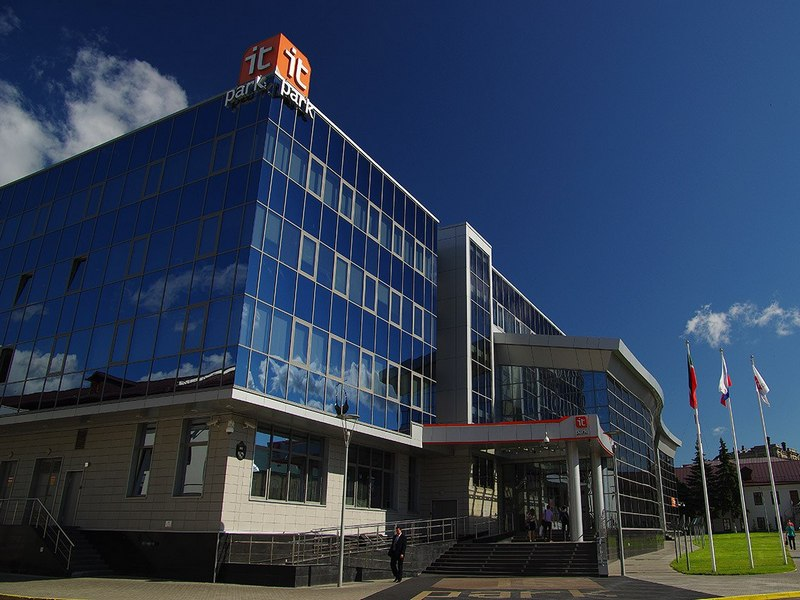

О городе
Казань столица Республики Татарстан, древний город с многовековой историей, расположенный на левом берегу реки Волга.
Существует несколько легенд, связанных с названием города. По самой распространенной из них Казань происходит от татарского слова «казан» - котел. Легенда гласит, что город был заложен на том месте, где без огня закипела вода в котле, врытом в землю. Символом города, изображенным на гербе, является мифическое драконоподобное существо Зилант.
Казань была основана как форпост на северных границах Волжской Булгарии более 1000 лет назад. Возраст города был определен во время раскопок на территории Казанского Кремля, когда была найдена чешская монета, датированная 929-930 годами, а также остатки каменной кладки и деревянной городской ограды, предметы утвари.
Между Западом и Востоком
Казань – один из ярких примеров того, как в одном городе мирно, в атмосфере дружелюбия и терпимости живут люди разных национальностей и вероисповеданий. Этническое и религиозное разнообразие в столице Татарстана сохраняется не один век. В городе действуют 125 культовых объектов, из них 65 мечетей, 45 православных храмов, 12 церквей других христианских направлений, 1 синагога, молельные дома Бахаи и Кришны.
В столице Татарстана проживают представители свыше 115 национальностей. Самые многочисленные из них по переписи населения 2010 года – русские (48,6%) и татары (47,6%). Также среди жителей Казани можно встретить чувашей, украинцев, марийцев, башкир и удмуртов.
Наледие Универсиады
Казань признана спортивной столицей России. «Золотой» страницей в историю города вошла XXVII Всемирная летняя универсиада 2013 года, наследие которой позволило провести XVI чемпионат мира FINA по водным видам спорта 2015 года и матчи Кубка конфедераций FIFA в 2017 году, матчи чемпионата мира по футболу в 2018 году.
Спортивная инфраструктура города включает 15 стадионов, 12 крытых ледовых арен, 54 плавательных бассейна, 378 спортивных зала и 942 плоскостные спортивные площадки.
Настоящим украшением города является 45-тысячный футбольный стадион «Казань Арена» (с 2019 года переименован в «Ак Барс Банк Арену») – первый в России стадион, построенный для проведения мундиаля 2018 года. В 2013 году на «Казань Арене» прошли церемонии открытия и закрытия Всемирных летних студенческих игр. В 2015 году на стадионе состоялись соревнования по плаванию и синхронному плаванию в рамках чемпионата мира по водным видам спорта. В 2017 году «Казань Арена» приняла 4 матча Кубка конфедераций, в 2018 году – шесть матчей чемпионата мира по футболу FIFA
На стадионе свои домашние матчи проводит казанский футбольный клуб «Рубин». Здесь также проходили игры сборной России, матчи Еврокубков.
В приоритете – общественный транспорт
Транспортная сеть Казани по признанию российских и зарубежных экспертов является одной из самых современных и удобных в России. Приоритет в городе отдан общественному транспорту, при этом столица Татарстана первой в России ввела на дорогах выделенную полосу для автобусов и троллейбусов. Сейчас Казань занимает первое место в неофициальном рейтинге городов России по длине выделенных полос для общественного транспорта. В столице Татарстана на 1000 человек приходится 155,7 м выделенных полос.
По результатам исследования Научно-исследовательского института автомобильного транспорта (НИИАТ), который занимается разработкой новой системы транспортного обслуживания Казани, столица Татарстана заняла первое место по показателям эффективности использования маршрутной сети. По улицам Казани курсируют маршруты 4 видов пассажирского транспорта: автобусов, трамваев, троллейбусов и метро. В будние дни общественный транспорт перевозит более 820 тысяч пассажиров.
Миллионы туристов в год
 Восхождение на туристический олимп Казань начала в 2005 году, когда столица Татарстана праздновала свое тысячелетие. В юбилейный год город посетило 500 тыс. гостей, в год Универсиады Казань приняла 1,5 млн гостей, в год проведения чемпионата мира по водным видам спорта – 2,1 млн, в 2016 году – 2,5 млн, а в год проведения чемпионата мира по футболу столица Татарстана приняла трехмиллионного туриста. К 2030 году Казань готовится встретить 5-миллионного туриста.
Восхождение на туристический олимп Казань начала в 2005 году, когда столица Татарстана праздновала свое тысячелетие. В юбилейный год город посетило 500 тыс. гостей, в год Универсиады Казань приняла 1,5 млн гостей, в год проведения чемпионата мира по водным видам спорта – 2,1 млн, в 2016 году – 2,5 млн, а в год проведения чемпионата мира по футболу столица Татарстана приняла трехмиллионного туриста. К 2030 году Казань готовится встретить 5-миллионного туриста.
Самыми посещаемыми местами у туристов являются Казанский Кремль, улица Баумана, Центр семьи «Казан», аквапарк «Ривьера» и другие достопримечательности.
Под охраной ЮНЕСКО
В Казани на государственной охране в качестве объектов культурного наследия (памятников истории и культуры) находятся 563 объекта, из них 119 федерального значения, 376 республиканского и 68 местного значений. В 2000 году перечень всемирного культурного наследия ЮНЕСКО пополнился ансамблем Казанского Кремля.
Чтобы сохранить рядовую историческую застройку, в окружении которой находятся памятники, Казань включили в список исторических поселений. Более 400 объектов подлежат сохранению без изменения стилистических особенностей. Таким образом, уникальное историческое наследие Казани сохранится для будущих ее поколений.
«Легкие» города
Паркам и скверам в Казани уделяется особое внимание. За последние 9 лет, с 2011 года, при поддержке республики и федерального центра в Казани обновлено и создано с нуля 92 места отдыха. Общая площадь парковых зон увеличилась на 280 га. Сегодня в Казани 144 парка и сквера общей площадью 412 га. Особенно жителям полюбились Горкинско-Ометьевский лесопарк, парк Горького, парк «Черное озеро», парк «Сосновая роща» и парк Победы.
Парки и скверы в Казани – это не только тихое место для отдыха, но и площадки для активного культурного и спортивного досуга горожан. Фестивали, кинопоказы, концерты, благотворительные ярмарки вдохнули жизнь в обновленные общественные пространства.
Тренд высоких технологий
 Отчетливо видно лидерство Казани в сфере экономики. Столица Татарстана занимает передовые позиции по инвестициям и строительству в Поволжье, по обеспеченности современными торговыми центрами и по совокупному капиталу собственных банков в России. В городе расположен крупнейший в России технопарк в сфере высоких технологий «ИТ-парк», а также один из самых больших в Европе технопарков - «Идея».
С 2007 года Мэрия Казани реализует крупномасштабную программу развития малого предпринимательства. Для бизнесменов действуют льготные программы кредитования и аренды муниципального имущества.